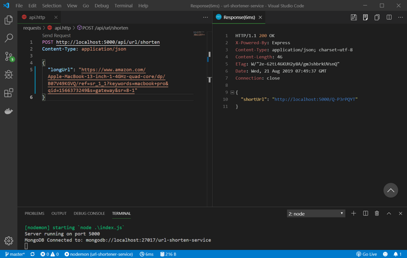

原文连接:https://www.cnblogs.com/fundebug/p/how-to-build-shorten-url-service.html
摘要： 很简单的短链接教程。
- 原文：十分钟实现短链接服务（Node + Express + MongoDB）
- 作者：MudOnTire
Fundebug经授权转载，版权归原作者所有。
短链接我们或多或少都使用过，所谓短链接就是根据较长的原链接url生成一段较短的链接，访问短链接可以跳转到对应的原链接，这样做好处在于：1. url更加美观；2. 便于保存和传播；3. 某些网站内容发布有字数限制，短链接可以节约字数。
短链接实现的原理非常简单，可以概括为：
- 为每个原链接生成不重复的唯一短链接
- 将原链接和对应短链接成对保存到数据库
- 访问短链接时，web服务器将目标重定向到对应的原链接
根据以上思路，我们自己也可以分分钟实现一个短链接生成服务。本文示例使用 node + express + mongodb。
1. 初始化项目
(1). 安装如下依赖：
package.json：
"dependencies": {
"config": "^3.2.2", // 读取项目配置
"express": "^4.17.1", // web服务器
"mongoose": "^5.6.9", // 操作mongodb
"shortid": "^2.2.14", // 生成不重复的唯一Id
"valid-url": "^1.0.9" // 判断url格式是否正确
}(2). 增加项目配置：
主要用于存放MongoDB的连接字符串和短链接的base url。
config/default.json：
{
"mongoURI": "mongodb://localhost:27017/url-shorten-service",
"baseUrl": "http://localhost:5000"
}(3). 增加MongoDB连接方法
config/db.js：
const mongoose = require('mongoose');
const config = require('config');
const db = config.get('mongoURI');
const connectDB = async () => {
try {
await mongoose.connect(db, {
useNewUrlParser: true
});
console.log(`MongoDB Connected to: ${db}`);
} catch (error) {
console.error(error.message);
process.exit(1);
}
}
module.exports = connectDB;(4). 启动express：
index.js：
const express = require('express');
const connectDB = require('./config/db');
const app = express();
// 连接MongoDB
connectDB();
app.use(express.json({
extended: false
}));
// 路由，稍后设置
app.use('/', require('./routes/index'));
app.use('/api/url', require('./routes/url'));
const port = 5000;
app.listen(port, () => {
console.log(`Server running on port ${port}`);
});2. 定义数据库模型
我们需要将原链接和对应短链接保存到数据库，简单起见，我们只需要保存一个短链接编码，相应的短链接可以使用base url和编码拼接而成。
models/url.js：
const mongoose = require('mongoose');
const urlSchema = new mongoose.Schema({
urlCode: String,
longUrl: String
});
module.exports = mongoose.model('Url', urlSchema);3. 生成短链接编码
这是我们实现的关键一步，思路是：用户传入一个长链接，我们首先使用 valid-url 判断传入的url是否合法，不合法则返回错误，如果合法我们在数据库中搜索是否有该长链接的记录，如果有则直接返回该条记录，如果没有则生成一条新记录，并生成对应的短链接。借助于 shortId，我们可以很方便的生成一个不重复的唯一编码。
routes/url.js：
const epxress = require("express");
const router = epxress.Router();
const validUrl = require('valid-url');
const shortId = require('shortid');
const config = require('config');
const Url = require('../models/url');
router.post('/shorten', async (req, res, next) => {
const { longUrl } = req.body;
if (validUrl.isUri(longUrl)) {
try {
let url = await Url.findOne({ longUrl });
if (url) {
res.json({
shortUrl: `${config.get('baseUrl')}/${url.urlCode}`
});
} else {
const urlCode = shortId.generate();
url = new Url({
longUrl,
urlCode
});
await url.save();
res.json({
shortUrl: `${config.get('baseUrl')}/${urlCode}`
});
}
} catch (error) {
res.status(500).json('Server error');
}
} else {
res.status(401).json('Invalid long url');
}
});
module.exports = router;4. 访问短链接跳转到原链接
最后一步非常简单，当用户访问我们生成的短链接时，我们根据url中的短链接编码查询到对应记录，如果存在对应记录我们使用express的res.redirect方法将访问重定向至原链接，如果不存在则返回错误。
routes/index.js
const epxress = require("express");
const router = epxress.Router();
const Url = require('../models/url');
router.get('/:code', async (req, res, next) => {
try {
const urlCode = req.params.code;
const url = await Url.findOne({ urlCode });
if (url) {
// 重定向至原链接
res.redirect(url.longUrl);
} else {
res.status(404).json("No url found");
}
} catch (error) {
res.status(500).json("Server error");
}
});
module.exports = router;测试一下：

访问短链接：

这样，一个简单的短链接生成服务就完成了，往往在我们看来很神奇的技术其实背后的原理和实现很简单，希望本文对大家有所启发。
最后，推荐大家使用Fundebug，一款很好用的BUG监控工具~
本文Demo地址：https://github.com/MudOnTire/url-shortener-service
关于Fundebug
Fundebug专注于JavaScript、微信小程序、微信小游戏、支付宝小程序、React Native、Node.js和Java线上应用实时BUG监控。 自从2016年双十一正式上线，Fundebug累计处理了20亿+错误事件，付费客户有阳光保险、核桃编程、荔枝FM、掌门1对1、微脉、青团社等众多品牌企业。欢迎大家免费试用！